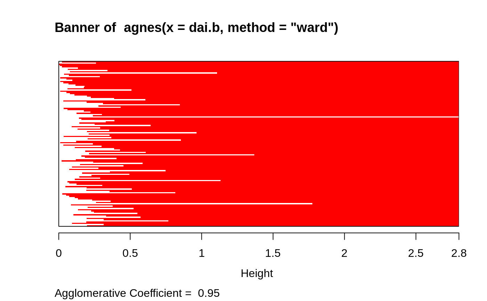
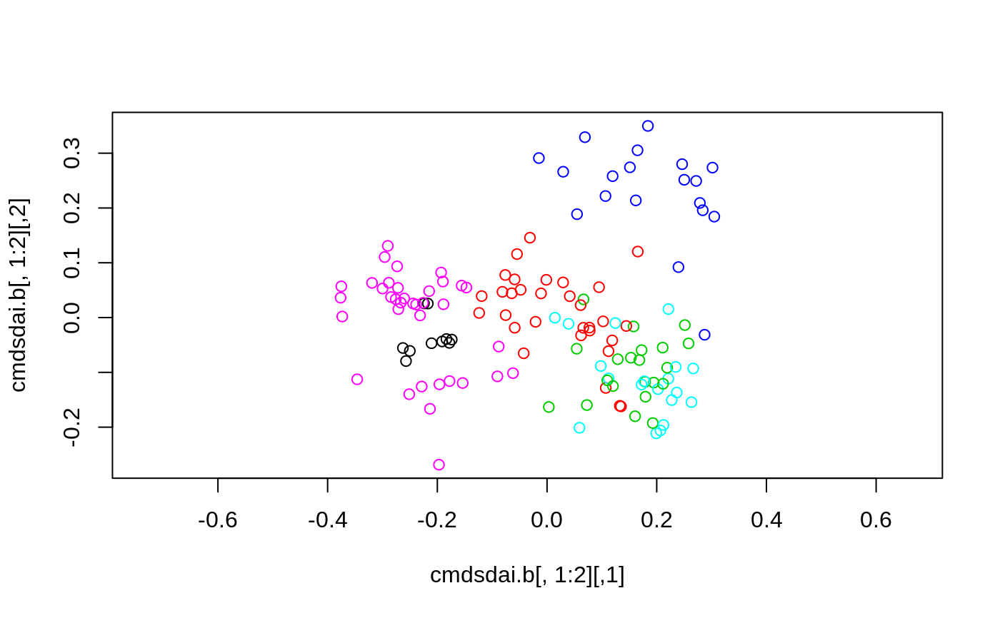

plantTraits.RdThis dataset constitutes a description of 136 plant species according to biological attributes (morphological or reproductive)
data(plantTraits)
A data frame with 136 observations on the following 31 variables.
pdiasDiaspore mass (mg)
longindexSeed bank longevity
durflowFlowering duration
heightPlant height, an ordered factor with levels
1 < 2 < ... < 8.
begflowTime of first flowering, an ordered factor with levels 1 < 2 < 3 < 4 < 5 < 6 < 7 < 8 < 9
mycorMycorrhizas, an ordered factor with levels 0never < 1 sometimes< 2always
vegaeraerial vegetative propagation, an ordered
factor with levels 0never < 1 present but limited< 2important.
vegsoutunderground vegetative propagation, an ordered
factor with 3 levels identical to vegaer above.
autopollselfing pollination, an ordered factor with
levels 0never < 1rare < 2 often< the rule3
insectsinsect pollination, an ordered factor with 5 levels 0 < ... < 4.
windwind pollination, an ordered factor with 5 levels 0 < ... < 4.
ligna binary factor with levels 0:1,
indicating if plant is woody.
piqa binary factor indicating if plant is thorny.
rosa binary factor indicating if plant is rosette.
semirossemi-rosette plant, a binary factor (0:
no; 1: yes).
leafyleafy plant, a binary factor.
sumansummer annual, a binary factor.
winanwinter annual, a binary factor.
monocarpmonocarpic perennial, a binary factor.
polycarppolycarpic perennial, a binary factor.
seasaesseasonal aestival leaves, a binary factor.
seashivseasonal hibernal leaves, a binary factor.
seasverseasonal vernal leaves, a binary factor.
everalwleaves always evergreen, a binary factor.
everpartileaves partially evergreen, a binary factor.
elaiofruits with an elaiosome (dispersed by ants), a binary factor.
endozooendozoochorous fruits, a binary factor.
epizooepizoochorous fruits, a binary factor.
aquataquatic dispersal fruits, a binary factor.
windglwind dispersed fruits, a binary factor.
unspunspecialized mechanism of seed dispersal, a binary factor.
Most of factor attributes are not disjunctive. For example, a plant can be usually pollinated by insects but sometimes self-pollination can occured.
Vallet, Jeanne (2005) Structuration de communautés végétales et analyse comparative de traits biologiques le long d'un gradient d'urbanisation. Mémoire de Master 2 'Ecologie-Biodiversité-Evolution'; Université Paris Sud XI, 30p.+ annexes (in french)
data(plantTraits) ## Calculation of a dissimilarity matrix library(cluster) dai.b <- daisy(plantTraits, type = list(ordratio = 4:11, symm = 12:13, asymm = 14:31)) ## Hierarchical classification agn.trts <- agnes(dai.b, method="ward") plot(agn.trts, which.plots = 2, cex= 0.6)#> [1] 1 1 2 2 3 4 4 2 3 5 5 2 2 1 5 4 6 2 6 1 5 4 3 2 2 3 2 1 4 6 6 6 6 2 5 6 3 #> [38] 5 4 3 5 2 2 6 1 6 1 1 3 4 4 3 3 3 6 2 5 2 2 2 6 5 5 4 4 6 2 6 2 6 3 6 2 2 #> [75] 4 2 4 2 5 4 5 4 5 5 5 4 2 2 1 2 3 3 6 6 6 6 2 6 6 3 3 6 6 6 6 6 6 5 5 4 5 #> [112] 6 6 2 6 4 6 6 2 3 4 6 6 3 6 2 3 6 1 5 2 4 2 3 3 3## Principal Coordinate Analysis cmdsdai.b <- cmdscale(dai.b, k=6) plot(cmdsdai.b[, 1:2], asp = 1, col = cutree6)